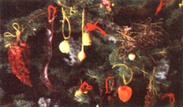

We've all heard of foraging for native edibles . . . but this family stalks wild ornaments!
I started my family's current collection of holiday tree ornaments quite by chance, early one Christmas morning. Our teenagers were still asleep, dinner preparations were well under way, and the new day's sun shone beckoningly, inviting me for a walk through the snow-covered woods. So I accepted the invitation.
It was a wonderful way to pass the time-one of those still, quiet moments when you feel especially alive and close to nature-and on the way back I plucked a souvenir from a deadfall log: five small bunches of white, lacelike fungi. Back home, I casually tossed the frills on one branch of our opulently decorated tree.
Those five foraged ornaments commanded so much attention that year, and meant so much more than any of our expensive manufactured decorations, that today all of our tree trimmings are nature's own.
Among the many wild plants and flowers and other natural items that adorn our tree are sprigs of white-blossomed pearly everlasting . . . maroon-colored cups from the northern pitcher plant . . . sweet goldenrod, with its light, aniselike scent . . . cones of staghorn sumac, picked crimson red in July . . . buttonbush branches, with their nubby, marblesize pods . . . shimmering, winglike, translucent seedcases from a variety of "weeds" . . . sprigs of sweet sorghum . . . deep orange Chinese lanterns . . . clusters of merry red highbush cranberries . . . small wild apples . . . flouncy plume-grass heads . . . and star bursts of September-white Queen Anne's lace.
Even the most ordinary-looking offerings from Mother Nature reveal their true beauty on our tree: goldenrod gall stems . . . milkweed pods, gathered in fall when they've turned silver . . . spiny jimsonweed orbs . . . brown-winged cones of yellow poplar fruit . . . prickly, porcupine-like pods from a wild cucumber vine . . . five-rayed nubs of thistle . . . a twinelike length of grapevine . . . and common sedge, plucked from the edge of a cornfield.
Of course, many of these forageables have to be thoroughly dried in full sun to prevent them from deteriorating, and virtually all the decorations require delicate handling to keep them in good shape over the years. Keep in mind, too, that you may not find every kind of decoration I've mentioned here (since every part of the country boasts its own varieties of wildlings) . . . but you'll surely discover others of equal beauty.
In any case, I think you'll agree that the resulting Christmas tree, given and decorat ed by the fertile earth, is a particularly festive and meaningful one . . . a tree that truly celebrates all of creation.
EDITOR'S NOTE: If you're going to have any young children in the house, avoid using any poisonous seeds or fruit-such as the jimsonweed pods mentioned in the article-on your tree. And for more tree-decorating ideas, turn to page 48.
|
 |
|
|